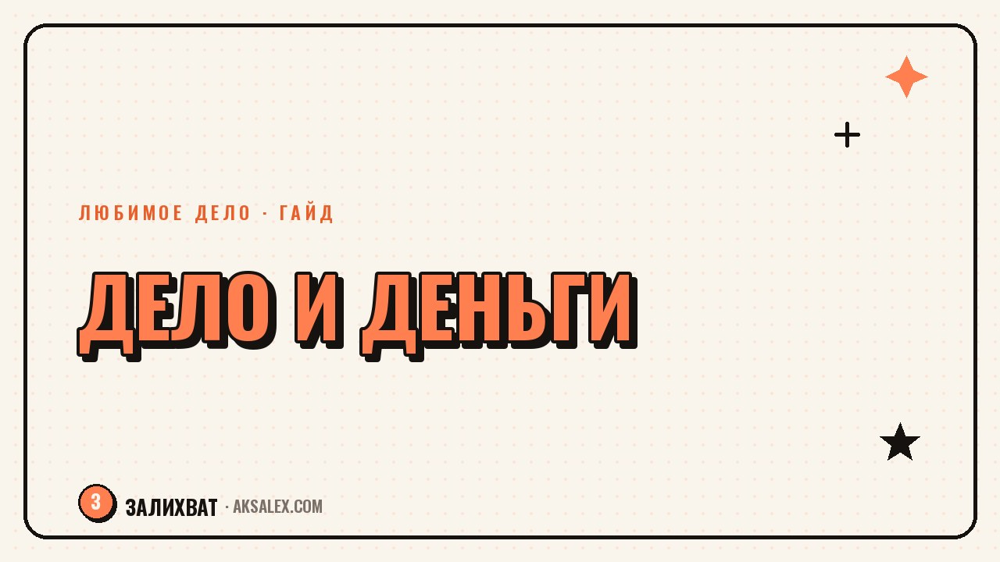

Любимое дело и деньги: как проверить идею

«Брошу работу и наконец займусь своим делом» - мысль знакомая, но между ней и реальным доходом обычно лежит пропасть из недосказанных вопросов. Будет ли за это платить кто-то кроме тебя самой? Сколько времени нужно, чтобы понять - идея живая или это просто красивая картинка в голове? Увольняться ради идеи, которую ты никогда не проверяла на живых людях, рискованно вдвойне: ты теряешь и доход, и время на выяснение того, что можно было выяснить за пару вечеров. Дальше - конкретный порядок действий, как протестировать дело жизни, оставаясь на зарплате.
Почему идею нужно проверять, а не хоронить и не бросаться в неё с головой
Есть два одинаково опасных пути. Первый - идея живёт только в голове, обрастает сомнениями, и ты откладываешь её на «после отпуска», «после Нового года», «когда дети подрастут». Второй - ты увольняешься в понедельник, а к пятнице понимаешь, что никто не готов платить за то, что ты предлагаешь, потому что ты не спросила об этом ни одного живого человека. Оба пути приводят в одну точку - к потерянному времени.
Разница между мечтой и рабочим делом простая: у мечты нет клиента, а у дела есть хотя бы один человек, который готов отдать деньги. Пока этого человека нет - это гипотеза, а не бизнес. И гипотезу проверяют не увольнением, а маленькими дешёвыми действиями, которые дают честный ответ: нужно это кому-то кроме тебя или нет.
Что именно значит «проверить идею»
Проверка идеи - это не про то, чтобы убедить себя, что всё получится. Это про то, чтобы как можно быстрее и дешевле получить два ответа: готов ли хоть один незнакомый человек заплатить за твой результат, и сколько реально времени у тебя уходит на то, чтобы этот результат произвести. Если на оба вопроса есть ответ «да, но...» - у тебя уже не идея, а черновик бизнеса.
Четыре способа протестировать идею без увольнения
1. Разговоры с живыми людьми вместо опросов в сторис
Опрос «а вы бы купили такое» почти бесполезен - люди в сторис отвечают из вежливости. Работает другое: ты находишь 10-15 человек из своей целевой аудитории и говоришь с каждым лично 15-20 минут о том, как они сейчас решают проблему, которую должна закрыть твоя идея. Не про продукт - про их текущую боль. Если три человека из десяти сами, без твоей подсказки, скажут «вот бы было что-то такое» - это сигнал.
2. Продажа до того, как продукт готов
Самый жёсткий, но самый честный тест - предложить оплату за то, что ещё не существует в финальном виде. Собрать пять предзаказов на курс, который ты ещё не записала, или взять оплату за консультацию, которую проведёшь завтра вечером после основной работы. Деньги на счету говорят больше, чем любые лайки и комментарии.
- Лендинг-заглушка с кнопкой «оставить заявку» и рекламой на небольшой бюджет
- Пост с открытой продажей в блоге, даже если подписчиков немного
- Личные сообщения знакомым из нужной аудитории с конкретным предложением
- Пробный формат на 3-5 человек по сниженной цене в обмен на честный отзыв
3. Минимальная версия вместо идеальной
Не нужен сайт, логотип и красивая упаковка, чтобы понять, работает ли идея. Нужен один человек, который получил результат и готов за него платить. Сделай версию своего дела руками, без автоматизации и дизайна - через гугл-таблицу, личные сообщения, встречу в кафе. Если на этом уровне идея не цепляет, упаковка не спасёт.
4. Тест по вечерам и выходным
Параллельно с основной работой ты можешь взять 2-3 первых клиентов или заказа и провести всё дело от начала до конца: от первого контакта до результата и оплаты. Это даёт то, что не даст ни один опрос - реальное ощущение, сколько часов в неделю идея у тебя забирает и сколько сил остаётся после.
Сколько времени и денег реально нужно на проверку
Проверка идеи не бесплатна, но она в разы дешевле, чем уход с работы в никуда. Ниже - сравнение четырёх способов по затратам времени, денег и по тому, что каждый из них показывает.
| Способ проверки | Время | Бюджет | Что показывает |
|---|---|---|---|
| Интервью с аудиторией | 1-2 недели по вечерам | 0 рублей | Есть ли боль, которую решает идея |
| Предзаказ или заглушка | 3-7 дней | 1000-5000 руб. на тестовую рекламу | Готовы ли люди платить заранее |
| Минимальная версия | 2-4 недели | 0-3000 руб. на материалы | Реалистична ли идея на практике |
| Первые 2-3 клиента вживую | 1-2 месяца параллельно с работой | Зависит от ниши | Сколько сил и часов забирает дело реально |
Если за полтора-два месяца такой параллельной проверки не появилось ни одного платящего человека и ни одного «да, мне это нужно» от собеседников - это не повод всё бросить навсегда, но повод пересобрать идею, а не упаковку вокруг неё.
Типичные ошибки при проверке идеи
Самая частая ошибка - спрашивать мнение у друзей и родных. Они любят тебя и почти никогда не скажут честно «мне это не нужно», потому что боятся задеть. Нужна выборка из людей, которые тебя не знают и ничем не обязаны.
Вторая ошибка - тратить на проверку месяцы вместо недель. Если тест идеи растягивается на полгода без промежуточных решений, скорее всего ты не проверяешь идею, а откладываешь неприятный вывод. Поставь себе дедлайн и конкретный критерий «да/нет» заранее, до начала теста.
Идею проверяет не мнение, а чужой кошелёк. Пока деньги не поменяли владельца хотя бы один раз, у тебя гипотеза, а не дело.
Третья ошибка - делать идеальную версию перед первым клиентом. Логотип, упаковка, сайт на конструкторе с анимациями - всё это можно добавить после того, как кто-то реально заплатил. До этого момента вложения в красоту - это способ оттянуть встречу с правдой.
Как нейросети ускоряют проверку идеи
Нейросети не заменят живой разговор с клиентом, но заметно сокращают подготовительную рутину. С их помощью можно за вечер собрать список вопросов для интервью, набросать текст лендинга-заглушки, составить черновик предложения для знакомых из нужной аудитории или быстро обработать записи разговоров и вытащить из них повторяющиеся формулировки боли.
- Текстовая нейросеть - черновик сообщения с предложением и вопросов для интервью
- Генератор изображений - обложка для лендинга-заглушки без найма дизайнера
- Сервис транскрибации - перевод записанных разговоров в текст для анализа
- Таблица с формулами или чат-бот-помощник - подсчёт времени и денег на тест
Экономия времени на рутине - это дополнительные часы на главное: на сами разговоры с людьми и на первую продажу. Именно это, а не красивое оформление, решает, жива идея или нет.
Когда пора принимать решение
Сигналы «пора двигаться дальше»
Если за время теста у тебя появилось хотя бы три-пять платящих человек, которые возвращаются или рекомендуют тебя другим, и ты физически успеваешь закрывать эти заказы вечерами и в выходные - это рабочий сигнал наращивать обороты, постепенно увеличивая долю времени на дело.
Сигналы «идею нужно пересобрать»
Если за два месяца честных попыток нет ни одной оплаты и ни одного искреннего «мне это нужно» - проблема не в недостатке решимости, а в самой идее или в том, кому ты её предлагаешь. В этом случае меняй аудиторию или формат, но не отказывайся от направления целиком, пока не попробовала хотя бы два-три варианта упаковки.
Частые вопросы
Сколько времени обычно занимает проверка идеи дела?
В среднем от трёх недель до двух месяцев параллельно с основной работой. Срок зависит от того, сколько у тебя свободных вечеров и как быстро получается находить людей для разговора или первых клиентов.
Можно ли проверить идею, если совсем нет свободного времени?
Да, но тест растянется дольше. Начни с малого: 2-3 интервью в неделю или один пост с предложением в блоге. Даже одна оплата или один честный отказ дают больше информации, чем месяц раздумий.
Что делать, если идею никто не поддержал на тесте?
Сначала проверь, с той ли аудиторией ты говорила и так ли сформулировала предложение. Часто дело не в самой идее, а в формулировке или в выборе людей. Попробуй другую формулировку и другую группу перед тем, как отказываться от направления.
Нужны ли деньги на старте, чтобы протестировать идею?
Минимальный тест через интервью и личные предложения знакомым бесплатен. Небольшой бюджет в 1000-5000 рублей нужен только если хочешь проверить идею через рекламу на лендинг-заглушку.
Когда действительно стоит уходить с основной работы?
Когда доход от нового дела за несколько месяцев подряд стабильно покрывает хотя бы половину твоих обязательных расходов, и у тебя физически не хватает вечеров и выходных, чтобы обслуживать всех желающих клиентов.
Раз тема оказалась полезной, вот что почитать следующим. Смена профессии после 40: как опереться на уже накопленный опыт вместо того, чтобы начинать с нуля.
Читать статью →а не вручную